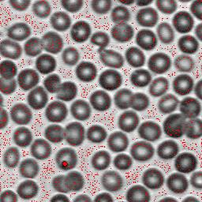
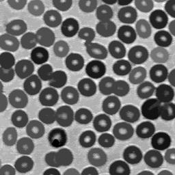

Examples
Numerical example:
>>> a = uint8([
[10, 10, 10, 10, 10, 10, 10],
[10, 9, 6, 18, 6, 5, 10],
[10, 9, 6, 18, 6, 5, 10],
[10, 9, 9, 15, 4, 9, 10],
[10, 9, 9, 15, 12, 10, 10],
[10, 10, 10, 10, 10, 10, 10]])
>>> print mmregmin(a)
[[0 0 0 0 0 0 0] [0 0 1 0 0 1 0] [0 0 1 0 0 1 0] [0 0 0 0 1 0 0] [0 0 0 0 0 0 0] [0 0 0 0 0 0 0]]
>>> print mmregmin(a,mmsecross(),'value')
[[0 0 0 0 0 0 0] [0 0 6 0 0 5 0] [0 0 6 0 0 5 0] [0 0 0 0 4 0 0] [0 0 0 0 0 0 0] [0 0 0 0 0 0 0]]
>>> print mmregmin(a,mmsecross(),'dynamics')
[[ 0 0 0 0 0 0 0] [ 0 0 4 0 0 1 0] [ 0 0 4 0 0 1 0] [ 0 0 0 0 14 0 0] [ 0 0 0 0 0 0 0] [ 0 0 0 0 0 0 0]]
Image example, filtering the regional minima:
Typically, the regional minima is very numerous in a real image. To filter the regional minima, one can use the mmhmin, mmclose, mmareaclose, or other functions that simplifies basins.
>>> f1=mmreadgray('bloodcells.tif')
>>> m1=mmregmin(f1,mmsebox())
>>> mmshow(f1,m1)
>>> f2=mmhmin(f1,70)
>>> mmshow(f2)
>>> m2=mmregmin(f2,mmsebox())
>>> mmshow(f2,m2)
|  |  | |
| f1,m1 | f2 |
 |
|
| f2,m2 |
Multiscale watershed
To build a pyramid of nested segmentations, use the marker for the watershed only the minima above a given dynamic. Two levels of this pyramid are build below, one with dynamic above 20 and the other, above 40.

{kind=link}
{kind=link}
{kind=link}